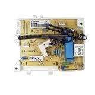

Háztartásigép Szakszerviz
Vezérlő panel javítás. A mai kornak megfelelően, sokszor a gyári alkatrészeknél jobb minőségű alkatrészek felhasználásával javítjuk:
Akár postai utánvéttel is!
- Mosó gépek
- Mosogató gépek
- Hűtő gépek
- Szárító gépek
- Villany tűzhelyek vezérlő, és fordulat szabályzó paneljeit.
A javítás általában 1-2 héten belül megtörténik. Kivétel lehet, ha a beépítendő alkatrészekre várni kell. Ekkor az időpont csúszhat, akár + 2 héttel is. A panel javításokra 3 hónap garanciát vállalunk!
A javíttatással Ön jelentős összeget takarít meg, és garantáltan jobb minőségű alkatrészeket is kap, a gyári panel csere helyett.
Vezérlő panel javítások *30500ft.
Ha Ön beszállítja készülékét, vagy kiszerelt elektronika paneljét szervizünkbe, akkor ez az összeg: *22000ft.
Indukciós kerámialapok paneljeinek javítása: *35000ft
A javításokat erre szakosodott a Kolléga Magyar Rádióban végzi. A javítások nem a szervizünkben történnek, így kérjük kedves ügyfeleinket, hogy hol a panelem, mikor lesz kész, stb kérdéseikkel ne hívogassák a szervizt, erre mi sajnos választ nem tudunk adni. A fent említett időkön belül, biztos hogy elkészül! Amint a panel visszaérkezett hozzánk a szervizbe, abban az esetben kollégánk azonnal telefonon hívni fogja Önöket.
Természetesen gyári paneleket is beszerelünk, itt Önnek kell mérlegelnie pénzügyi helyzetét figyelembe véve. Gyári panelek árai általában: 20-280 ezer forint között vannak, + a szerelési díj.
Minden esetben a gép számai alapján egyedi árajánlatot adunk.
A javítással kapcsolatos érdeklődésekre / mikor lesz kész, mikor hozzák vissza, stb / menet közben nem tudunk pontos felvilágosítást adni. A panelek javítása nem nálunk a műhelyben történik, ezért pontos információt csak és kizárólag akkor tudunk mondani, ha visszakaptuk azokat a javításból.
Minden héten HÉTFŐN van a panelek leadás javításra, innentől kezdve 7 – 8 munkanap amíg elkészül, ha minden van hozzá raktáron, és nem kell alkatrészt külön rendelni.
Ha rendelni kell az alkatrészt, akkor azt KÍNÁBÓL rendeljük ami miatt a javítás elkészülte akár + 2 héttel is csúszhat.
Megértésüket köszönjük.
Elérhetőségeink:
E-mail: haztartasigepszakszerviz1@gmail.com
Telefonon: 061-227-7168
06/1-227-2040
06308944199
Háztartási gépei ha sorra meg - meg állnak, telefonáljon nekünk, megoldjuk a problémáját!